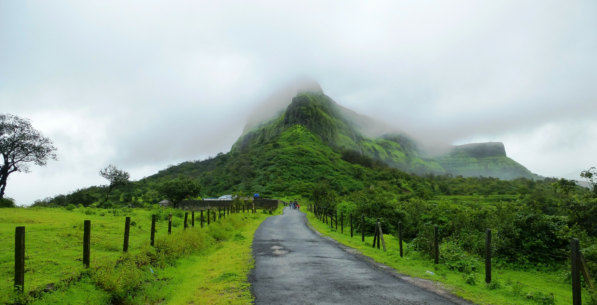

Location/Region: Near Lohagad, Lonavala
Difficulty: Medium
Elevation: 3,556 feet (1,083 meters)
Visapur Fort is the twin fort of Lohagad but larger, higher, and more rugged. Built in the early 18th century by the Peshwas, the fort has a massive plateau at the top with panoramic views of Lohagad, Tikona, Tung, and Pawna Lake. It is ideal for those looking for a slightly more challenging alternative to Lohagad, especially in the monsoon when the terrain becomes adventurous and alive with flowing streams.
The trek begins near Patan village, around 2 km from Malavli railway station. There are multiple routes – the Bhaje Caves trail, which is scenic but longer, and the waterfall route, which is shorter but steeper and popular during the monsoon. The trail is filled with stone steps, slippery rock patches, and flowing water, giving trekkers a real taste of the Sahyadri monsoon vibe.
 ← Back to Home